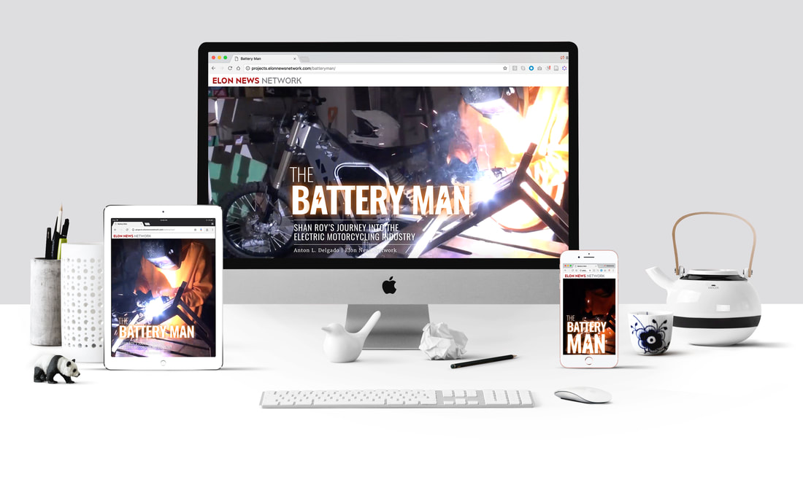

POLITICO Design Developer application
Currently I'm the lead designer at the Sacramento Business Journal and have previously worked at Elon News Network and The Virginian-Pilot. I also avidly search for #dailydesigninspo
Of note: This website was coded by hand, using HTML and CSS.
Elon News Network
The Battery Man | Print design, web design and social media design
I worked with ENN reporter Anton L. Delgado on an article about an Elon freshman who designs and builds his own electric motorcycles. We traveled to the freshman's home where I took photos and Delgado recorded interviews and shot video. Together, we discussed graphic ideas, what photos we wanted and how to best present it online and in print.
Web
The webpage was coded using HTML, CSS, JavaScript, CSS Grids and Bootstrap. We also had a little help from The New York Times. Click here to view the webpage.



Elon News Network
Best Of 2017 | Print design, web design, social media design and planning
I led the production of Elon News Network's inaugural Best Of 2017 edition. In addition to the design, I helped decide the categories, put together a survey, promote voting on social media, tally votes, decide winners, track content and photos and edit articles.
This team effort was coordinated primarily with Web Producer Alex Hager and Managing Editor Emmanuel Morgan.
Web
This website was coded using HTML, CSS, JavaScript and Bootstrap. Click here to view the website.


Sacramento Business Journal
Additional web projects | Multiple articles that were translated from print to online
At the Sacramento Business Journal we use a variety of tools, including Infogram, Timeline.js and custom code snippets, among others, to provide interactive storytelling to our readers.
Aerojet | Web and print design
Watch the video for a narrated tour of the webpage or click here to visit.

Empty fields | Web and print design
Watch the video for a narrated tour of the webpage or click here to visit.
While at Elon University, I conducted research regarding the components that make up award-winning news designs. The website the results are displayed on was coded using HTML, CSS, JavaScript and Chart.js. To view the website, click here. This research was also published in the Elon Journal, an undergraduate communications journal.
Elon News Network
SGA elections | Web design
For the 2018 SGA elections, ENN decided to do an interactive website that allowed our audience to watch all of the candidates' videos in one place, divided up by year. This webpage was coded using HTML, CSS and Bootstrap.
I was the design chief of Elon News Network during the 2016 election season. I worked with Production Manager Jacob LaPlante to coordinate election graphics and ensure consistent branding across print and broadcast. The cover for the election results was designed on deadline. To watch the live broadcast, click here.